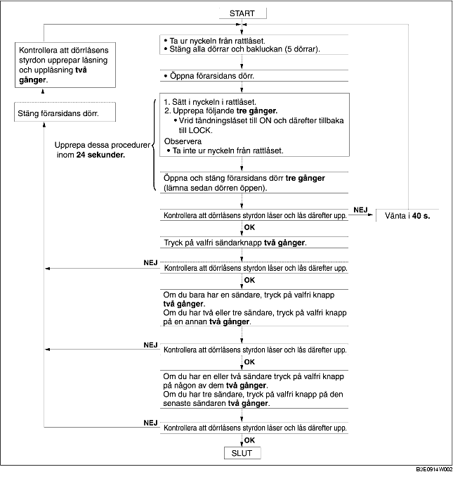

REGISTRERING AV SÄNDARENS ID-KOD
B3E091467543W03
-
Observera
-
• När du registrerar in ID-koden i en nyckellös kontrollmodul, kontrollera att andra sändare inte används i närheten.
-
• När ID-koden är registrerad, ta ur nyckeln ur rattlåset och kontrollera att alla dörrar låser och låser upp med hjälp av sändaren.
